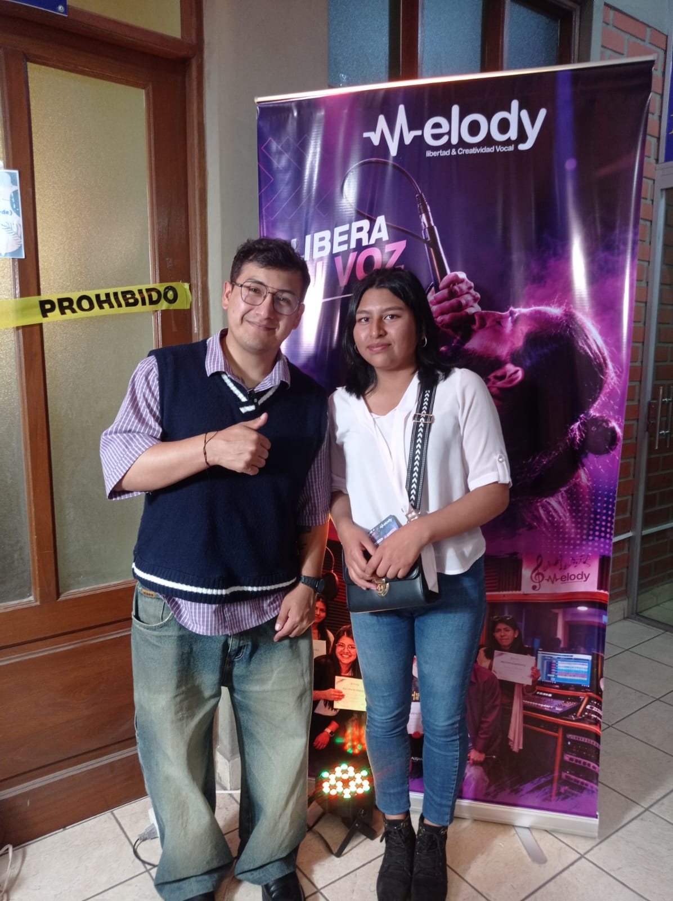
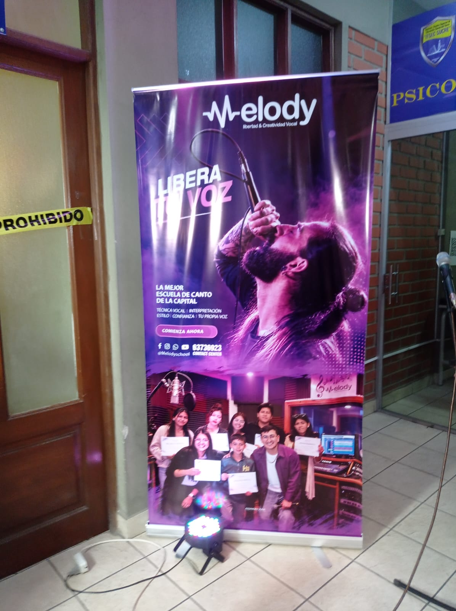
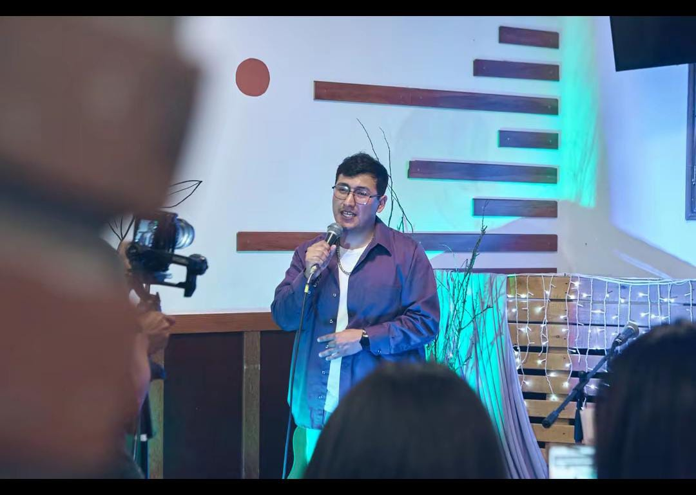

Melody empezó como un emprendimiento pequeño aquí en Sucre. El dueño siempre le gustó cantar desde colegio, pero no había una escuela que enseñe técnica vocal de forma sencilla. Entonces empezó dando clases particulares a amigos, con un micrófono y una computadora en su cuarto. Como le gustaba enseñar y vio que la gente perdía el miedo a cantar, decidió ponerle nombre: Melody - Libera tu voz. Así fue creciendo de boca en boca, hasta poner su banner y su estudio chiquito donde ahora graba y da clases.No es una empresa grande, es un emprendimiento local que empezó por la pasión por el canto y por enseñar.
Para nuestro trabajo usamos Windows 11 en las computadoras del estudio porque ahi corren los programas de grabacion como FL Studio y Audacity. Para diseño y videos usamos una Mac con macOS, y para atender a los clientes y TikTok usamos Android e iOS en el celular.